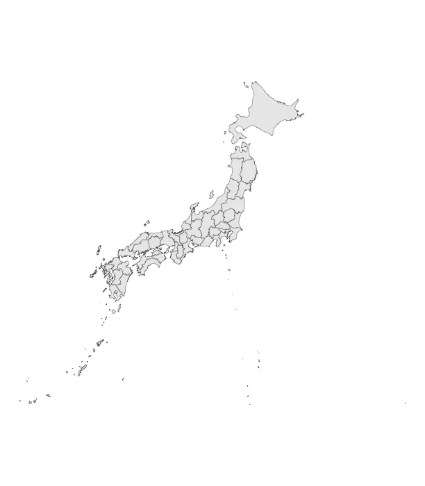

指導した学位論文
卒業論文・修士論文・博士論文
📍 研究対象地域
ドットをクリックすると該当論文へジャンプ

台湾
九州
本州・四国
琉球
台湾
北海道
📘 卒業論文
2024年度
- 「沖縄県中南部地域で話されるウチナーヤマトグチにおける愛称語について」【download】
- 「鹿児島県鹿児島市方言における疑問文イントネーション -若年層に着目して‐」【download】
- 「長崎市方言における文末詞バイとタイ―若年層のイントネーションと代替方言に着目して―」【download】
- 「鹿児島県鹿児島市方言の若年層におけるアクセント変化」【download】
2023年度
- 「佐賀県鳥栖市田代方言の命令表現の形式と機能について」
- 「兵庫県加古川市方言における格配列−能格性・分裂自動詞性の検証を中心に−」【download】
- 「コーパス分析から得られる現代日本語の左方転位構文の特徴−節内代名詞要素の文法関係に着目して−」【download】
- 「口語における言いさし文の再検討」【download】
- 「韓国語における主語標示と情報構造」【download】
- 「宮崎県都城方言における疑問詞疑問表現の韻律特徴」【download】
- 「長崎県南島原市方言における従属節中のガ/ノ交替」【download】
2022年度
- 「福岡県小郡市方言におけるアスペクトの体系」【download】
- 「徳島県下郡方言における禁止相当の表現「レン・ラレン」の使用条件」【download】
- 「香川県中讃方言におけるアスペクト体系」【download】
- 「宮崎県都城市方言における句レベルの韻律構造」【download】
- 「長崎県諫早市方言における与格と方向格の体系的記述」【download】
2021年度
- 「標準ハンガリー語における連合複数」【download】
- 「熊本県山鹿市菊鹿町方言の動詞屈折形態論」【download】
- 「愛媛県中予方言における多様な形容詞連用形の使い分け」【download】
- 「長崎市方言の可能表現－3世代間比較に基づく体系の変遷を中心に－」【download】
- 「長崎県南島原市深江方言における可能表現：ダス形の使用条件」【download】
2020年度
- 「バスク語における逆受身構文」
- 「福井県坂井市三国町方言におけるナ形容詞」【download】
- 「鹿児島県鹿児島市方言における疑問文音調のイントネーション」【download】
2019年度
- 「宮崎県椎葉村尾前方言における主題標示の再検討」【download】
- 「長崎県五島列島福江島崎山方言における動詞屈折形態論の記述」【download】
- 「日本語、韓国語、中国語、タガログ語、スペイン語における与格機能の類型論」【download】
2018年度
- 「宮崎県椎葉村尾前方言における形容詞のサ形を修飾部にとる名詞句構造の記述」【download】
- 「青森県野辺地方言における主格標示と情報構造」【download】
- 「現代日本語口語における接続助詞ケドの「主題提示」とされる用法の再解釈」
- 「福岡市方言における「来る」「行く」の選択について」
- 「九州方言における形容詞経験者構文の非典型格標示」【download】
- 「日本語における子音語幹動詞の形態構造」【download】
- 「広島県安芸方言におけるアスペクト」
2017年度
- 「南琉球宮古語新城方言のケースマーキング」
- 「南琉球宮古語新城方言の連体修飾構造」
- 「南琉球八重山語石垣真栄里方言の世代間差」
- 「長崎方言のガノ交替」
- 「山口県周防大島の漁労関連語彙集」
- 「博多方言の談話資料作成」
- 「愛媛県西予市城川町方言の格配列」
2016年度
- 「タガログ語の接辞PAGをともなう動詞語根の名詞化」
- 「熊本県菊池市泗水方言における主格標示の使い分け」
- 「The modal-evidential expressions in the Omae dialect of Shiiba」
- 「長崎方言におけるアスペクト表現について」
- 「熊本方言のヴォイスについての研究」
- 「福岡県京都郡みやこ町方言におけるアスペクト表現」
- 「長崎方言のアスペクト表現」
- 「長崎県五島宇久方言における主語標示」
2015年度
- 「宮崎県椎葉村尾前方言のアスペクト体系」
- 「宮崎県椎葉村尾前方言の代名詞体系」
2014年度
- 「タガログ語と所有傾斜」
- 「カヤルディルド語のmodal caseについて」
- 「福岡博多方言の可能表現」
- 「長崎県諫早方言の可能表現」
- 「大分方言の可能表現」
- 「宮崎県椎葉方言のアクセント体系」
- 「香川方言のケースマーキング」
- 「佐賀方言のサ詠嘆法」
- 「佐賀方言のル・ラル敬語」
- 「佐賀方言の主語標示」
- 「長崎島原方言の敬語表現」
- 「長崎平戸方言の否定過去形ザッタ・ンヤッタ・ンジャッタ」
2013年度
- 「アイヌ語の名詞抱合について」
- 「岡山方言のアスペクト」
- 「長崎佐世保方言のガノ交替」
- 「熊本方言のツタイについて」
- 「宮崎方言の終助詞コッセン」
- 「宮崎方言の助詞ヤジについて」
- 「長崎対馬方言の引用詞について」
2012年度
- 「沖縄首里方言の所格助詞の使い分け」
📗 修士論文
2021年度
- 「A basic description of Yilan Creole phonology: with a special focus on the Aohua dialect」【download】
2020年度
- 「福岡県柳川市方言の文法概説」【download】
- 「日本語諸方言におけるラ行五段化の方言間比較と通方言的一般化」【download】
2018年度
- 「南琉球宮古語城辺新城方言の文法概説」【download】
2017年度
- 「南琉球八重山語西表島船浮方言の文法概説」【download】
2015年度
- 「現代アメリカ英語のYes-No疑問文に関する記述研究」
2014年度
- 「北琉球語徳之島井之川方言の文法概説」
📕 博士論文
公開されている博士論文については、大学リポジトリの公開リンクからPDFに辿り着けるようになっています。
2024年
- 「福岡県柳川市方言の記述研究」（リポジトリ登録中）
- 「日本語諸方言における「ラ行五段化」の総合的研究」（リポジトリ登録中）
2022年
- 「南琉球宮古語城辺町新城方言の文法」【リポジトリへ】
2021年
- 「南琉球八重山語石垣島白保方言の記述研究」【リポジトリへ】